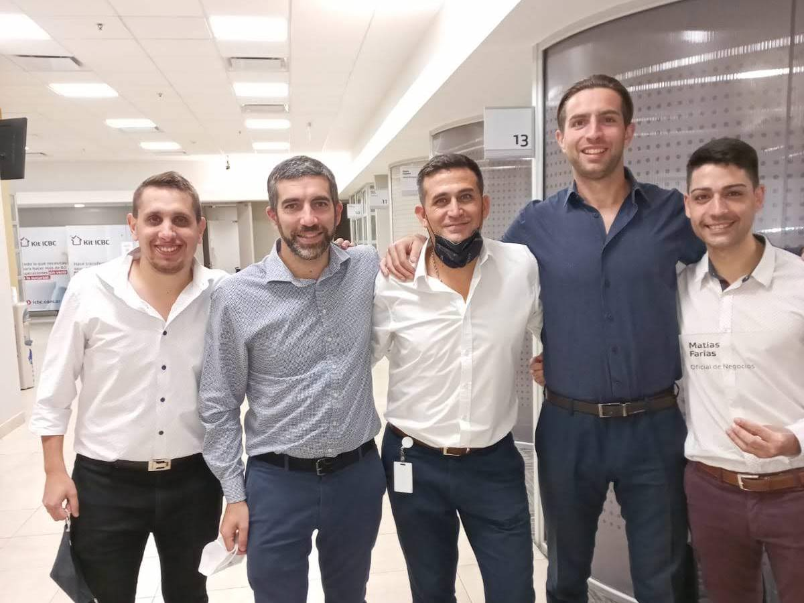

Acerca de mí
Me llamo Matias Ezequiel Farias, soy un chico argentino nacido en el año 1993 con ciudadanía italiana en trámite. Hasta el momento, y a lo largo de los años, he desarrollado mi personalidad como una persona que intenta superarse día a día incorporando nuevos conocimientos y experiencias para poder estar siempre actualizado y en tema con los asuntos de actualidad en el mundo. A partir de ello, cabe mencionar que he obtenido el título en Licenciatura en Administración de Empresas en la Universidad Nacional de Tres de Febrero (Untref) pero ante el exponencial crecimiento y desarrollo tecnológio he decido comenzar a introducirme en dicho rubro para adquirir los conocimientos y las habilidades necesarias para poder incorporarme tanto en una empresa o bien prestar mis servicios de manera independiente y remota. Además, poseo intelectos financieros acerca del mercado bursatil y de criptomonedas no sólo analizando las variables diarias (análisis fundamental) sino también el análisis técnico contanto con los certificados correspondientes de los cursos realidados.
Dentro del ámbito laboral, cuento con una experiencia profesional demostrable de 5 años (2017-2022) en la entidad bancaria Industrial and Commercial Bank Of China (ICBC) ubicado en Argentina, Buenos Aires. En un comienzo ocupé el rol de "Greeter", función que dejé de hacer a los 6 meses cuando me ascendieron a "Oficial de Negocios Retail". Desde ese entonces, aprendí nuevas funciones, habilidades y distintos tipos de gestiones (administrativas, comerciales, conversacionales, de negociación y grupales) que al implementarlas correctamente, un año más tarde, me han contribuido a un nuevo ascenso dentro de la empresa ocupando así la función de "Oficial Senior Retail". Dos años más tarde, me promovieron hacia un nuevo cargo a ocupar "Oficial Senior Banca Empresas" gracias a los resultados obtenidos durante el tiempo transcurrido. Lamentablemente, no he podido desarrollar el aprendizaje pleno en este cargo debido a la inesperada crisis mundial de pandemia que hemos atravezado y a la decisión de tomar un giro en la vida, un cambio de rumbo, optando por trasladarme a Europa (Italia precisamente) a generar la ciudadanía.
Haber optado por este cambio, no significa que no tengo en claro mi camino o perspectiva hacia el porvenir sino todo lo contrario. A pesar de haberme separado de mi la familia, de mis amigos, del cómodo ambiente de trabajo, de las rutinas y los hobbies (deportes) sé que esta decisión me abrirá nuevos caminos a transitar para contar, probablemente, con un futuro mucho más prometedor no solo en lo personal sino en lo profesional trayendo consigo situaciones tanto negativas como positivas pero que sumarán como experiencia, apredizaje y adaptabilidad para formarme continuamente como persona.
En conclusión, considero tener un perfil emprendedor orientado a la apertura de nuevos conocimientos con el fin de poder crcer de manera contínua y así lograr el cumplimiento de objetivos propuestos ya sean laborales como personales. Como se ha menconado, el enfoque apunta a un progreso constante para generar nuevas oportunidades de valor. En este momento, me encuentro en búsqueda de una plaza laboral que me permita volcar, desarrollar y mejorar mis habilidades tecnológicas en un ambiente de trabajo humano, productivo y con posibilidades de crecimiento.
Seguir leyendoEDUCACION
Comentarios de visitantes
"Las 2 webs estan en Contrucción, pero igual me parece importante discutir desde este momento sobre las páginas, ya que una vez terminadas no se modifican mas, porque el trabajo ya fue entregado. Así que si hay algo para modificar es ahora o nunca."
Richard Doe